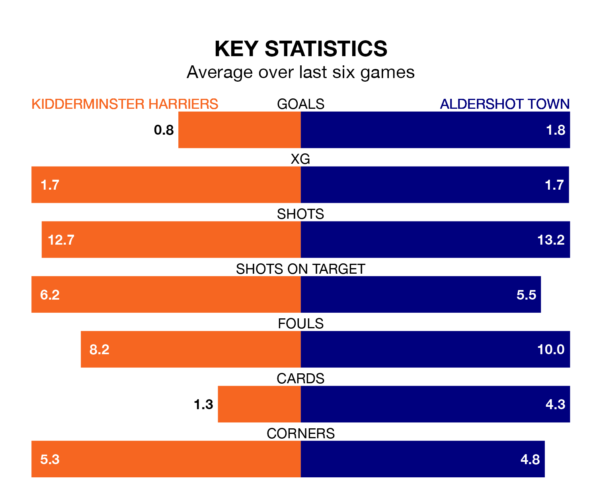

Kidderminster Harriers face Aldershot Town at the Aggborough Stadium on Saturday looking to secure a first win in six National League games.
Kiddy have lost four and drawn one matches since they last earned three points – against Ebbsfleet United on December 2.
They face an Aldershot side who have won two and drawn one over that time.
Kidderminster Harriers are bottom of the table after 28 games, of which they have won four and drawn eight, earning 20 points.
Aldershot are 13 places ahead of Kiddy in 11th, with 12 wins and four draws putting them on 40 points.
In the last 10 years, Kidderminster Harriers and Aldershot have played each other on six occasions. Kidderminster Harriers won two of them, Aldershot three, and they drew once.
On average, Kiddy scored 0.5 goals and the Shots 0.7 in those matches.
Their last meeting was on November 11, when Aldershot won 1-0 at home.
With 20 goals in 28 games so far this season, the home team are the league's lowest scorers with 0.7 goals per game. But they are conceding fewer than average too, letting in 37 goals at a rate of 1.3 per game.
Town, meanwhile, are above average scorers, with 1.7 goals per game, compared to a league average of 1.5. They have conceded 1.8 goals per game.
Kidderminster Harriers's last match was on January 6, a 2-0 loss against Rochdale.
Aldershot beat Woking 3-2 last time out, on January 1, with Jack Barham, Lorent Tolaj and Tyler Jayden Frost on the scoresheet.
Updated: 14:53 (UTC), 16/01/24